Silverpine Tours

雷龙之国 · 10 天 9 晚 · 古寺与摄影
Silverpine Tours
缓行海拔 · 法会 · 以虎穴寺为终章
专为 Tracy 二人定制
帕罗国际机场 PBH
2 位成人 · 私人成团
2026 年 9 月下旬 · 唐比法会
中文持证向导
Hyundai Santa Fe · 可升级
廷布 → 布姆塘 → 岗提 → 普那卡 → 帕罗
雷龙之国 · 10 天 9 晚 · 古寺与摄影
缓行海拔 · 法会 · 以虎穴寺为终章
专为 Tracy 二人定制
帕罗国际机场 PBH
2 位成人 · 私人成团
2026 年 9 月下旬 · 唐比法会
中文持证向导
Hyundai Santa Fe · 可升级
廷布 → 布姆塘 → 岗提 → 普那卡 → 帕罗
致函
古寺院 · 壁画 · 摄影 · 慢节奏与海拔适应
尊敬的 Tracy 您好，
本版行程按您的要求重排：缓升海拔、布姆塘法会与古寺、岗提与普那卡、 帕罗购物，并以虎穴寺作为倒数第二日的摄影高潮收束。 全线陆路、中文向导、长途不走夜路。
匹配说明

此致
Rajiv Pradhan & Tshering Lhamo
Silverpine Tours · 自 2012
WhatsApp +975-17649720
报价说明
请先选好酒店与车型，我们再出具最终总价确认单。
服务套餐 · 每人（不含酒店）
USD 2,160
双人服务合计 USD 4,320。已含 SDF、签证、中文向导、Hyundai Santa Fe 车辆（含 GST）及景点入场费。
交通 · 标准
已含在服务套餐
双人舒适 SUV · 本版默认车型
交通 · 可升级
服务费上调
Toyota Prado 或 GWM Tank 500 · 选定后加收，并入最终报价
加德满都 ⇄ 帕罗 · 经济舱往返参考约 USD 495–520 / 人
Drukair · www.drukair.com.bt Bhutan Airlines · www.bhutanairlines.bt
不含：酒店、机票、午晚餐（可按酒店早餐条款）、小费、保险、车型升级差价。餐食如需全包三餐可另报。
请您选择
选定后我们核算 9 晚住宿，叠服务套餐与车型，出具最终总价。不含 Olathang Cottage。
第 01 天
安全落地、完成入境、适应山谷光线与步行节奏；完成第一组「入门」建筑与铁索桥影像。
不赶虎穴不赶布姆塘——先低压缓升，为全旅摄影与健康打底。
轻薄层叠；有外套的长袖长裤便于寺外观礼。舒适步行鞋。
清淡首晚：素汤、白米、少辛。不丹有土豆/荞面等，忌豪饮与过辣，便于海拔适应。
铁索桥广角 + 人桥剪影；辛托卡白墙侧光；车窗山脉（注意安全，选停靠点）。
第一眼不丹：跑道缝隙的山谷、经幡与「我们开始慢下来」的决心。
 帕罗 → 廷布
帕罗 → 廷布
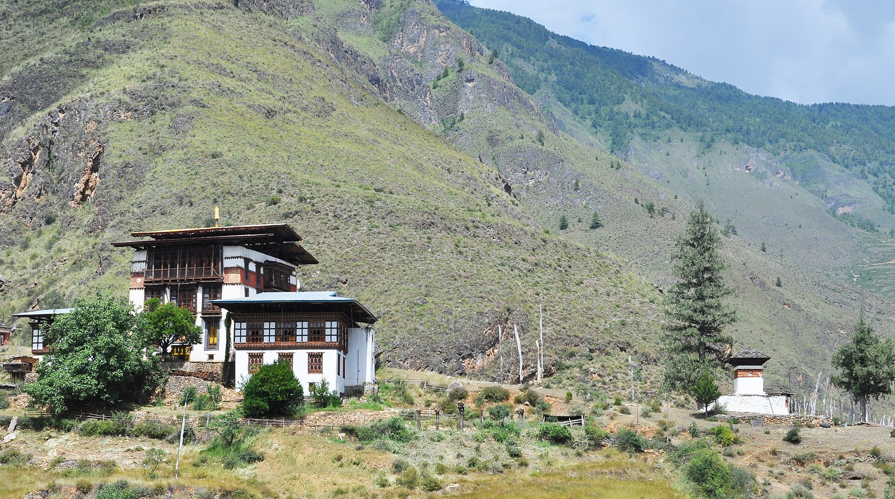

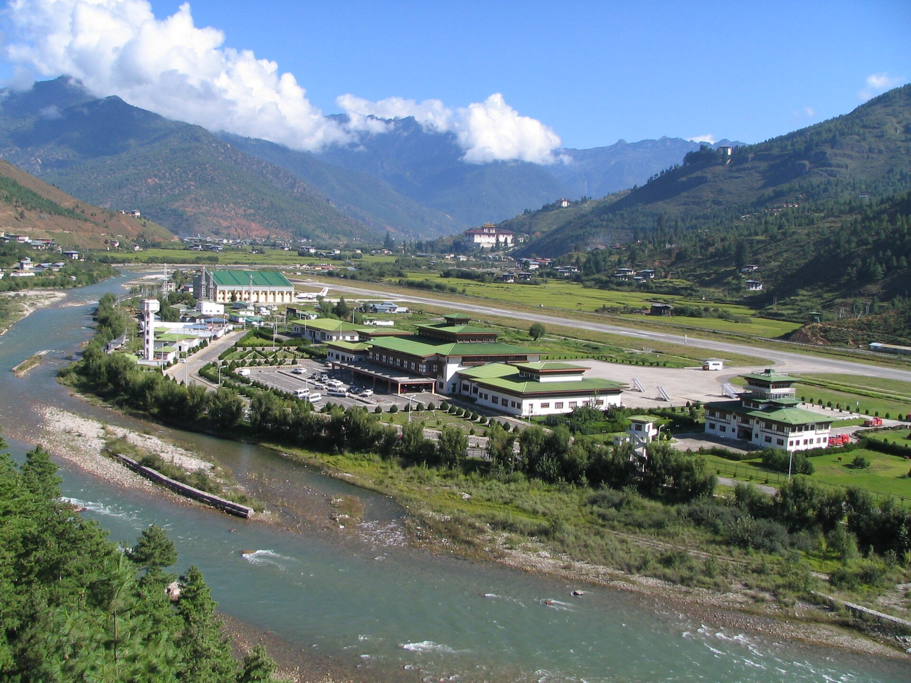

第 02 天
理解不丹「山林修行」气质；完成一组北谷寺院构图；近观唐卡/彩绘工艺，为后期壁画日储备「看什么」。
首都中的静修地——切里/坦戈与市区节奏反差，适合写「城市与道场」对照笔记。
徒步鞋 + 可卷可层的衣物；寺院区务必遮肩遮膝。备薄外套，林间较凉。
中午谷地简餐；晚间可试 ema datshi（芝士辣椒，可请少辣）或素菜盖浇。
山径透视、寺院白墙与森林层次、细部木构；艺术学校彩绘近拍（征许）。殿内多禁拍。
「在首都背后五公里，时间被经轮放慢」——记录气味、脚步与向导口述祖师故事。
 切里 · 坦戈
切里 · 坦戈


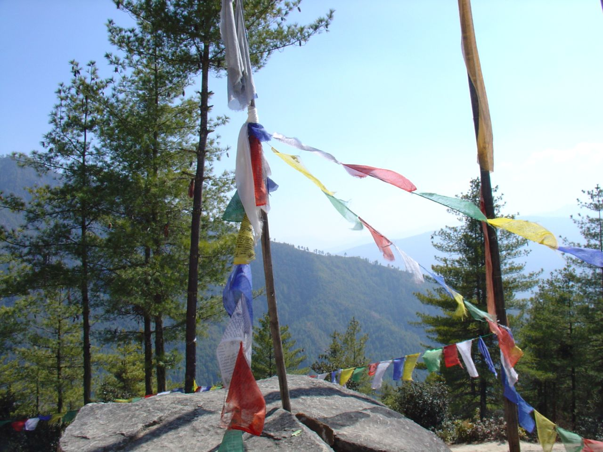
第 03 天
完成中央高地穿越；身体开始进入更高谷地节奏；收齐一组「公路与山口」叙事图。
不丹旅拍经典：山口经幡 + 层层河谷。今日成就感来自「稳稳走完」而非景点数量。
车内可单层，山口风大须厚外套/围巾。防晒、润唇、水瓶必备。
少油少炸，少量多次补给；干果与温茶。抵达后清淡晚餐，早睡为法会日蓄力。
多楚拉全景与 108 塔排列；通萨宗远望；云雾公路。避免长时间车窗模糊快门。
「九小时不是折磨，是把心思送到东方圣地的路程」——可写停靠时的沉默。
 进入布姆塘
进入布姆塘

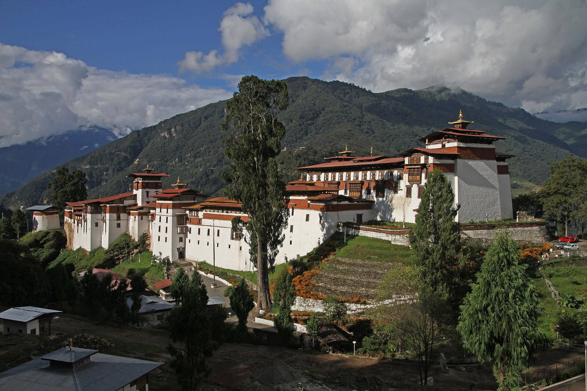


第 04 天
亲历社区法会而非只看「景点」；收获面具、经幡、信众衣饰的高密度题材。
整趟最高光之一。火祭/净行环节以现场为准，尊重为先。
端庄保守（遮肩膝）；谷地日间可暖、风大加外套。颜色勿过于花哨争戏。
提早简餐；带小零食静观全场。避免空腹头晕。
70–200 类长焦抓面具细部；广角环境；低角度经幡。禁闪光、勿进场。殿内禁拍。
写「声音先于画面」：鼓、号、笑声与静止；以及您选择放下快门的瞬间。
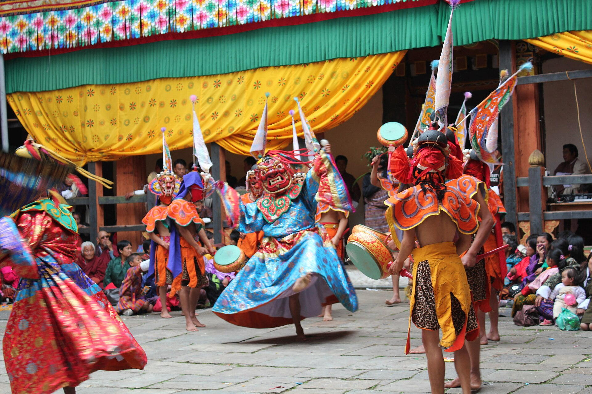
唐比 · Drup / Mani


第 05 天
读懂布姆塘「圣地家族」：松赞干布、莲师、贝玛林巴线索串起；眼睛训练对壁画与外立面的耐心。
质量优先、不塞满：曲札寺不作安排。燃烧湖与贝玛林巴伏藏相关、适合摄影——时间允许则安排，不允许则果断放弃，保证塔辛与主寺从容。
登山鞋 + 保暖层（塔巴林风硬）。太阳镜与防晒。寺院礼仪装。
富碳水早餐；午后少量甜食防低血糖。高处多喝水、少饮酒。
外景建筑、窟寺岩面、田野前景；若至燃烧湖：岩壁、水色、经幡环境片。壁画殿内通常禁拍。
写一幅最记得的壁画细节；若错过燃烧湖，可写「为从容而做的取舍」本身即是旅行态度。
 塔辛 · 壁画日
塔辛 · 壁画日


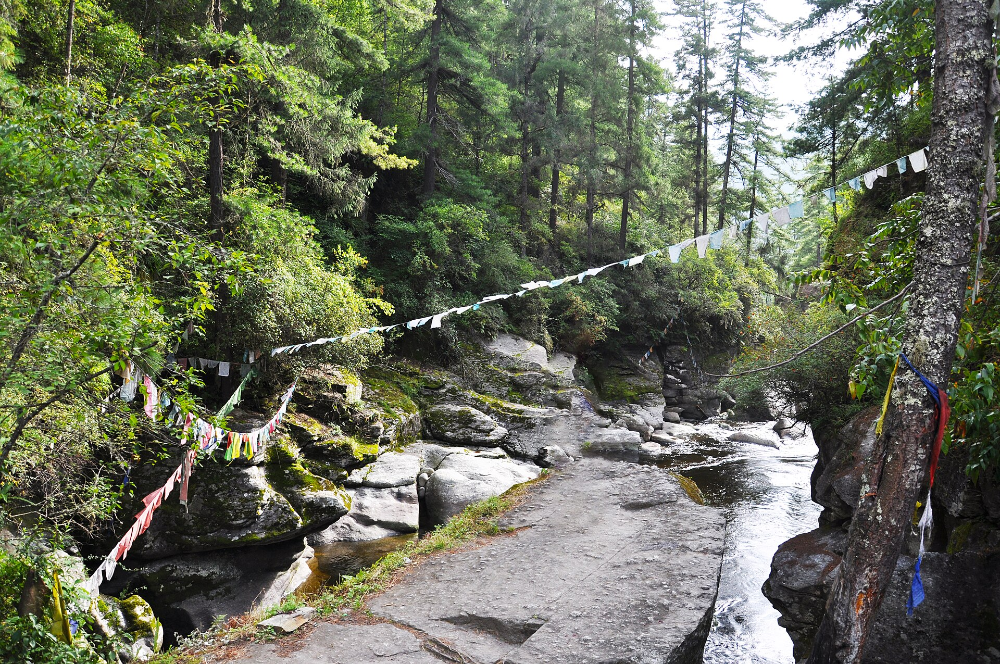

第 06 天
离开布姆塘但不直冲帕罗；抵达开阔高山湿地谷地，题材从「古寺」转向「大地与宁玛寺院」。
西返中途的呼吸点——比 10 小时直达帕罗更温柔。可选帐篷/精品 lodge 体验。
岗提风大且凉：羽绒或厚外套、帽子。夜间更冷。
到宿后热汤和主食；少生冷。有机谷地蔬菜可遇。
谷地大曲线、晚霞侧光白寺、木构农舍；慢门云雾（三脚架可选）。
「高原盆地像一个静音的剧场」——写风与距离。
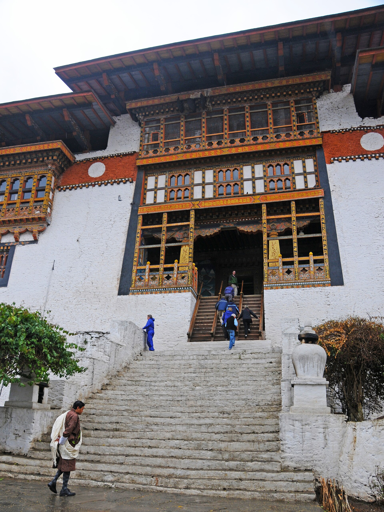
驶向岗提谷地

第 07 天
完成「岗提精神脊梁」与「普那卡水边城堡」对照；海拔回落，身体松一口气。
辩经不是表演；若遇见，是加分。普那卡宗为西不丹建筑巅峰之一，适合宽景摄影。
上午仍需保暖；下午河谷变暖可减层。进宗堡仍需端庄。
普那卡可尝河谷时蔬、红米；晚餐稍丰盛亦可（海拔较低）。
岗提：高角看谷；宗堡：河汇夹角、吊桥前景、白墙三角构图。殿内禁拍。
「从风口到水流」——记录温度、湿度与心境变化。
 普那卡宗
普那卡宗

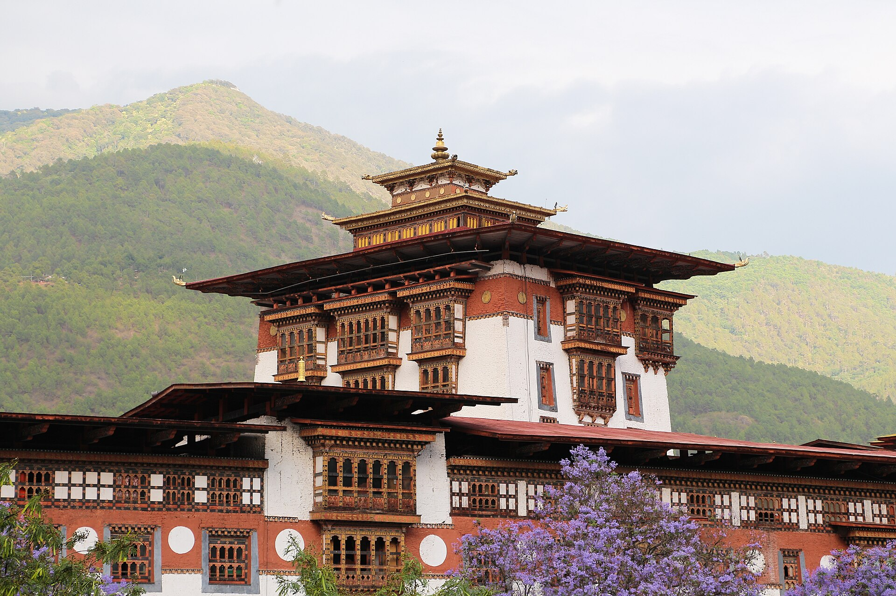
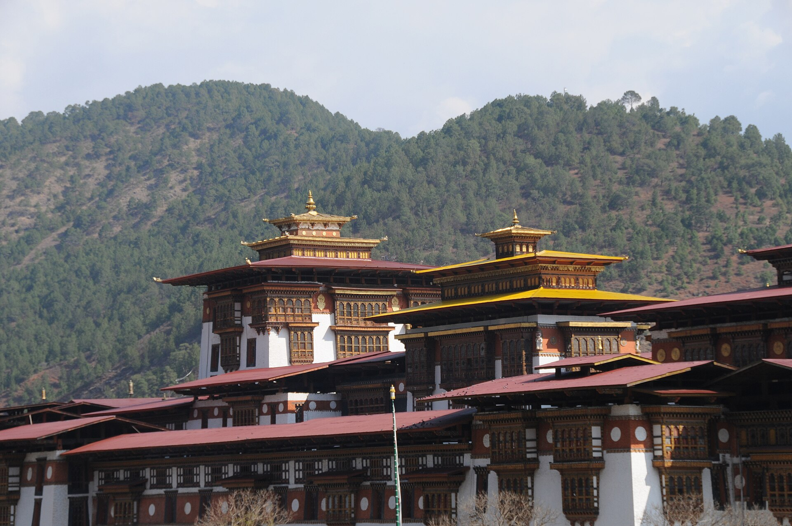
第 08 天
补齐帕罗古寺摄影；完成旅行伴手礼；为虎穴「终章」调整睡眠与装备。
慢回帕罗，不把采购挤在离境清晨。购物与古寺并列，互不挤压。
舒适城市装 + 薄外套；试鞋是否适合明日登山。
晚餐碳水充足但不过饱；多喝水；少酒。
祈楚院落对称、老柏；博物馆外形与塔楼。店招与手作特写（征许）。
「还没虎穴，却已准备好」——列明日镜头、电池与心愿清单。
 回到帕罗
回到帕罗
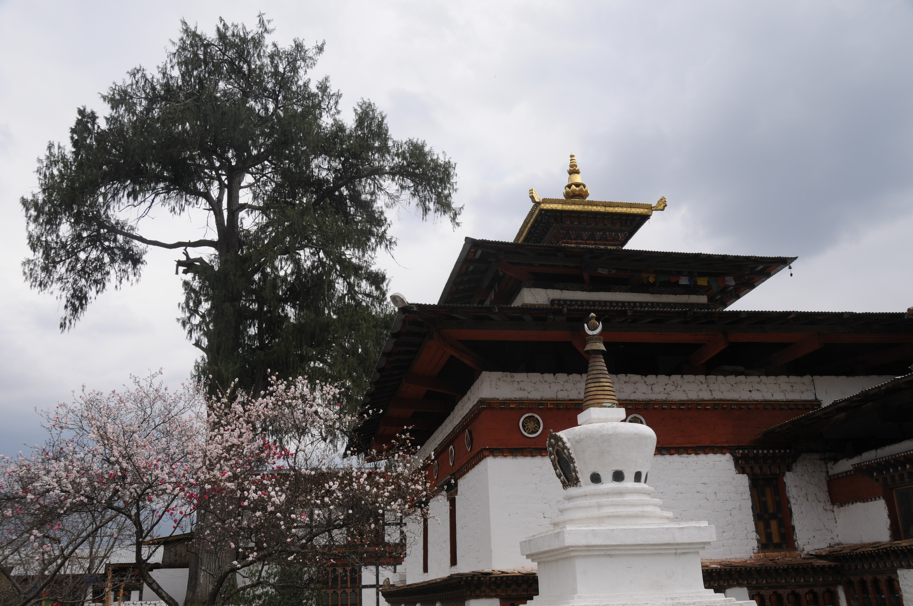

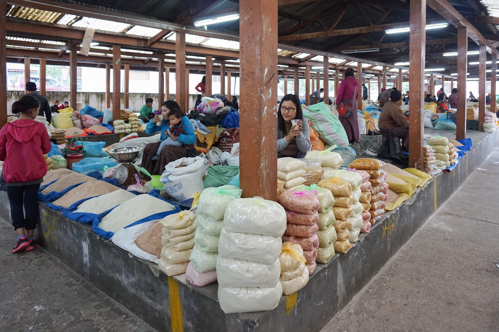

第 09 天
完成全旅最高象征的拍摄与参访；体力与镜头均已历练九天，成功率与满意度通常更高。
刻意压轴——先适应海拔与节奏，再登虎穴，比抵达第 2 天冲顶更安全、更从容。
登山鞋、速干层、防风外套、帽子；备雨衣薄外套。背包极简：水、零食、镜头。
高能量早餐；中途小补给；下山后正常晚餐，补水与蛋白。
经典侧角全景、经幡前景框景、人与崖比例；阴天云雾层次佳。殿内禁拍勿争执。
「为什么把虎穴留在最后」——写呼吸、腿与那一刻按下快门前的安静。
 虎穴寺 · 终章
虎穴寺 · 终章


第 10 天
完整带走行李与故事；完成不丹段，开启回家航线。
不强行塞景点；离境日留白，让虎穴余韵留在身体里。
飞行舒适装；外套机舱备用。
简约早餐；机上补水。
若时间允许：机场观景台远山。登机前整理存储卡备份思路。
十天回望：法会、壁画、岗提的风、虎穴的石阶——挑三张「内心封面图」。
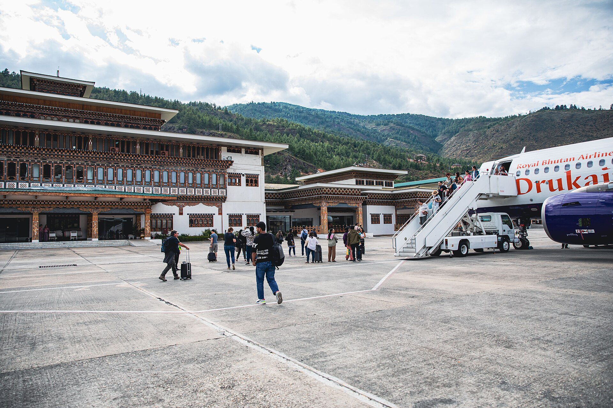

总览
下一步
请回信选择：各城酒店 + 车型（Santa Fe / Prado / Tank 500）。我们将发送最终总价。
服务套餐每人 USD 2,160
WhatsApp +975-17649720
须知
有效期
服务套餐自出具起 15 日参考有效；最终以酒店确认与锁房为准。
Silverpine Tours
www.silverpinebhutan.com